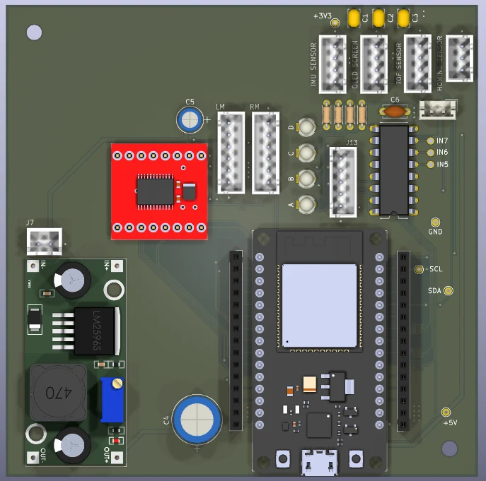
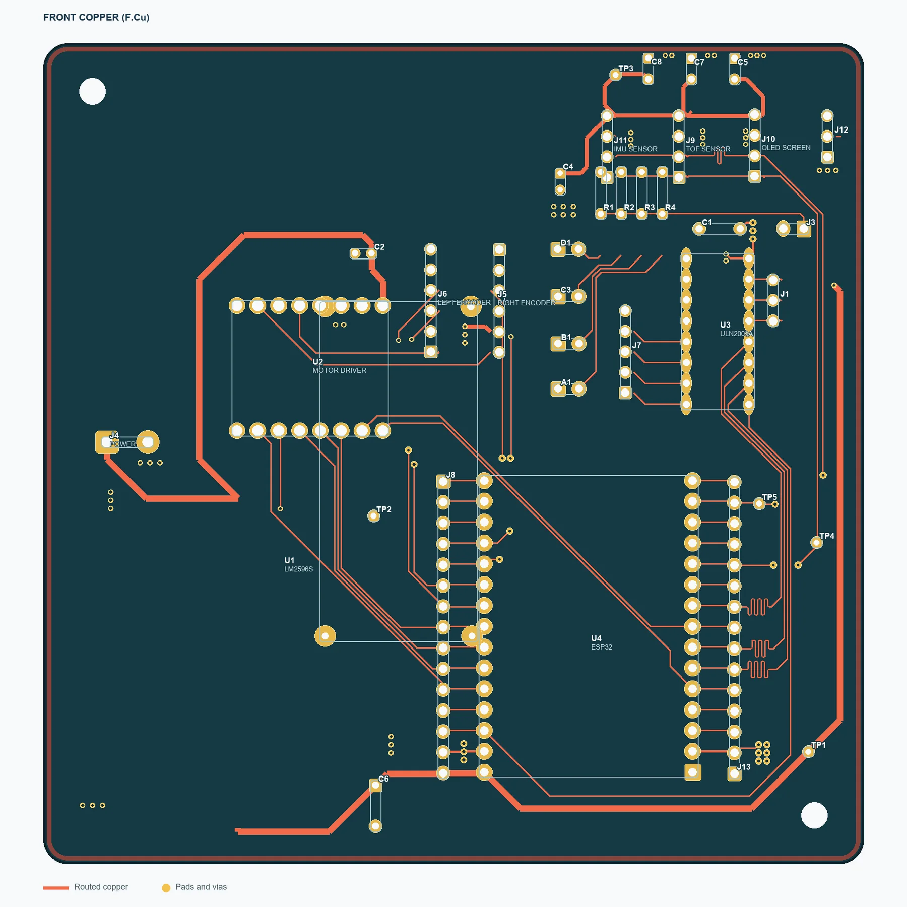
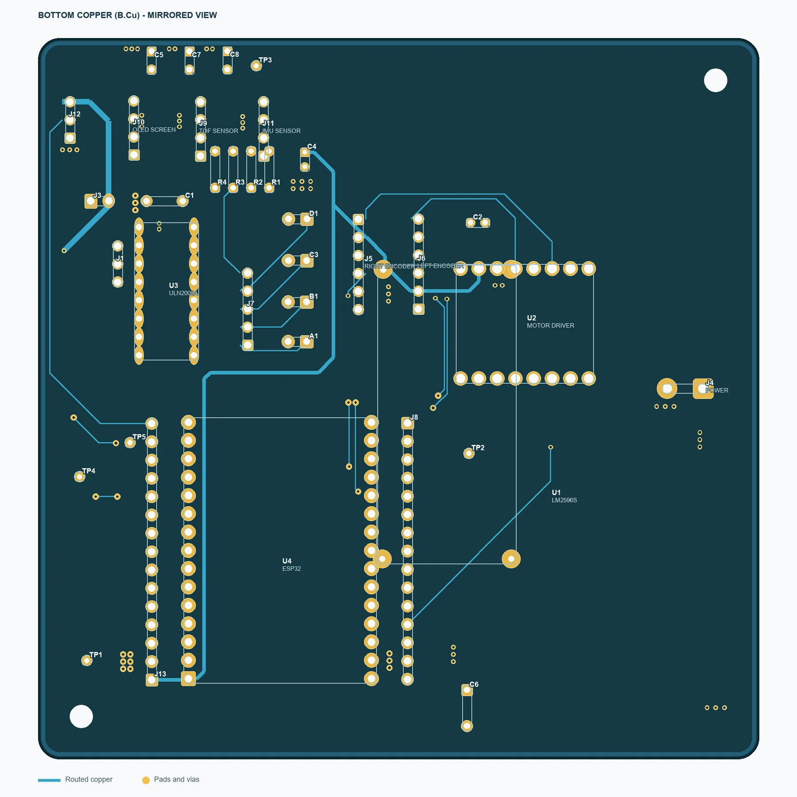
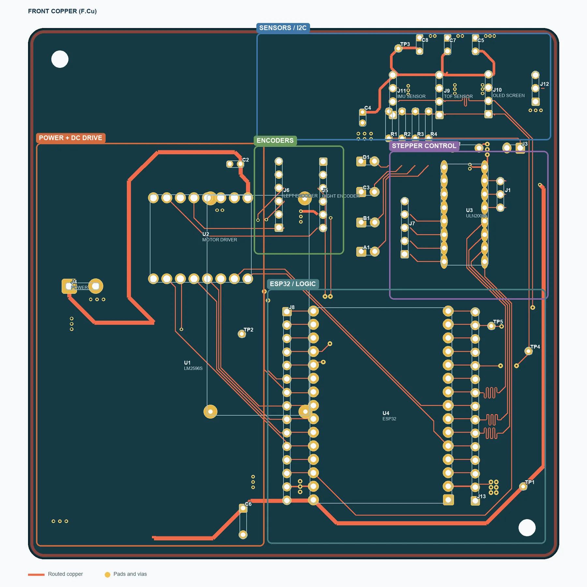
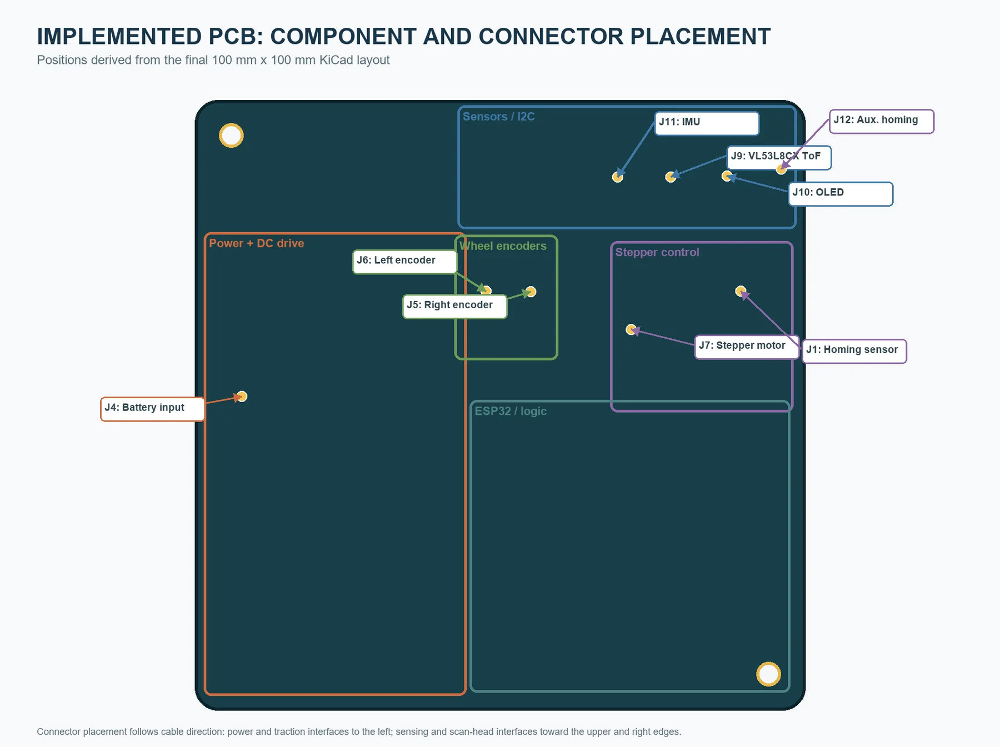
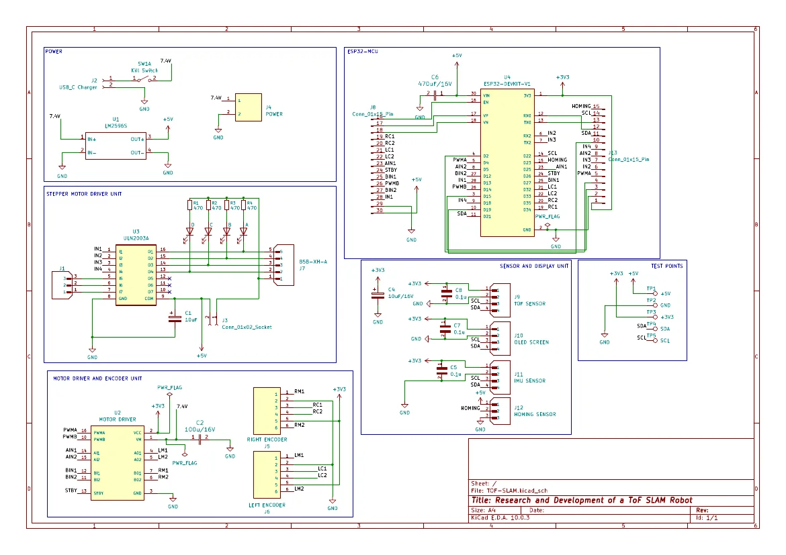

Reliable interconnects
Dedicated headers replaced repeated manual wiring between the robot subsystems.
PCB Development · Stage 01
The implemented two-layer board that replaced loose prototype wiring and consolidated the robot's power conversion, motion drivers, and multizone sensor interfaces.

The early robot used temporary point-to-point jumper connections while the hardware architecture was still changing. While useful for benchtop testing, chassis vibration, motor electrical noise, and loose connectors made it impossible to maintain a dependable mobile SLAM platform.
I designed this PCB to give every subsystem a defined physical location and keyed header. It consolidated power conversion, dual H-bridge motor control, stepper drive, the ESP32 development module, and dedicated sensor headers onto one rigid board mounted directly to the chassis deck.
“Transitioning from bench wiring to a custom PCB turned an unstable test rig into an autonomous mobile platform with repeatable electrical characteristics.”
Dedicated headers replaced repeated manual wiring between the robot subsystems.
Power, drive, logic, sensing and stepper sections were grouped by role.
Indicators and labelled test points support assembly checks and debugging.
The board outline and connectors were developed against the chassis envelope.
Layout Development
All surface-mount and through-hole components are placed on the front layer. The copper layers and functional zoning maps below show how signal integrity and current returns were managed.




Circuit Schematic
The schematic groups the 7.4 V power regulation, ESP32 headers, ULN2003A stepper drive, dual motor H-bridges, and I2C sensor bus. Click to view high-resolution schematic PDF.

Open full schematic PDF ↗Interactive Bill of Materials
This interactive KiCad iBOM export cross-references component references, package footprints, and values directly to their board coordinates.